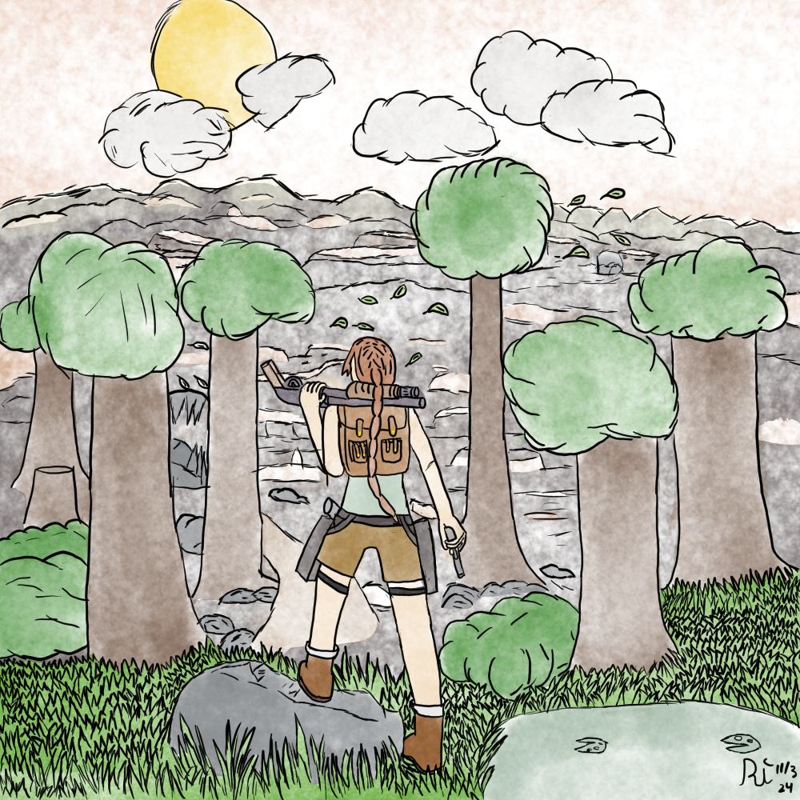
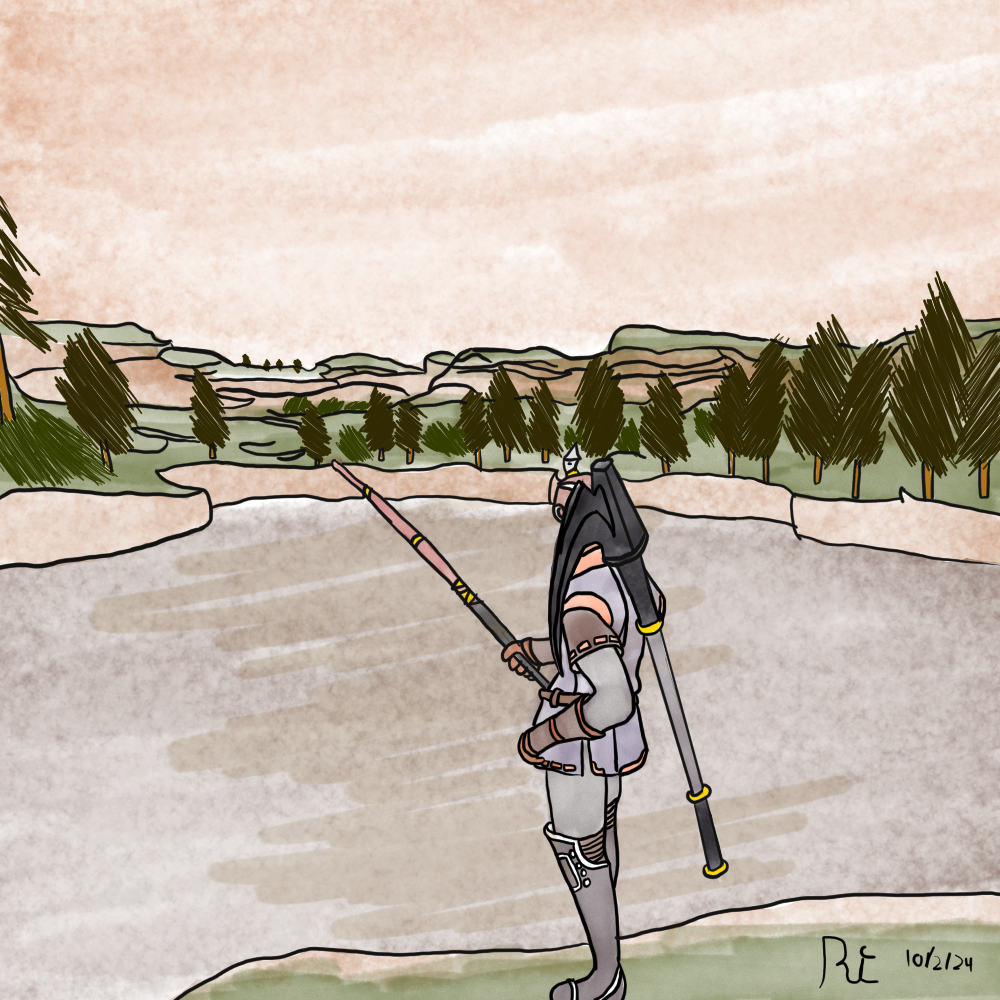
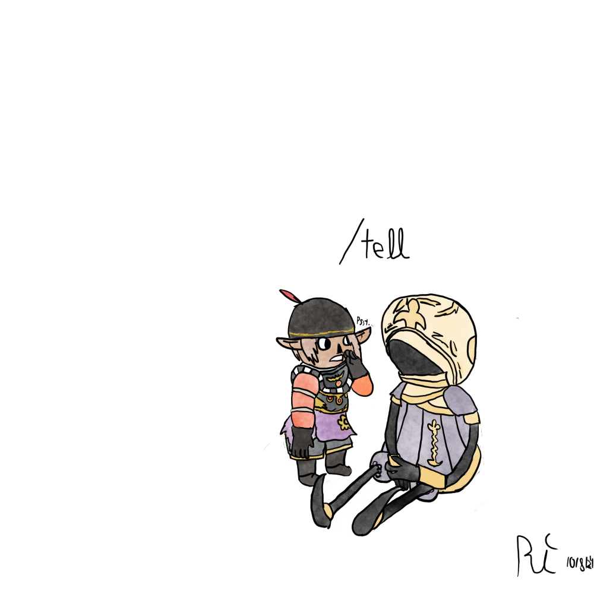
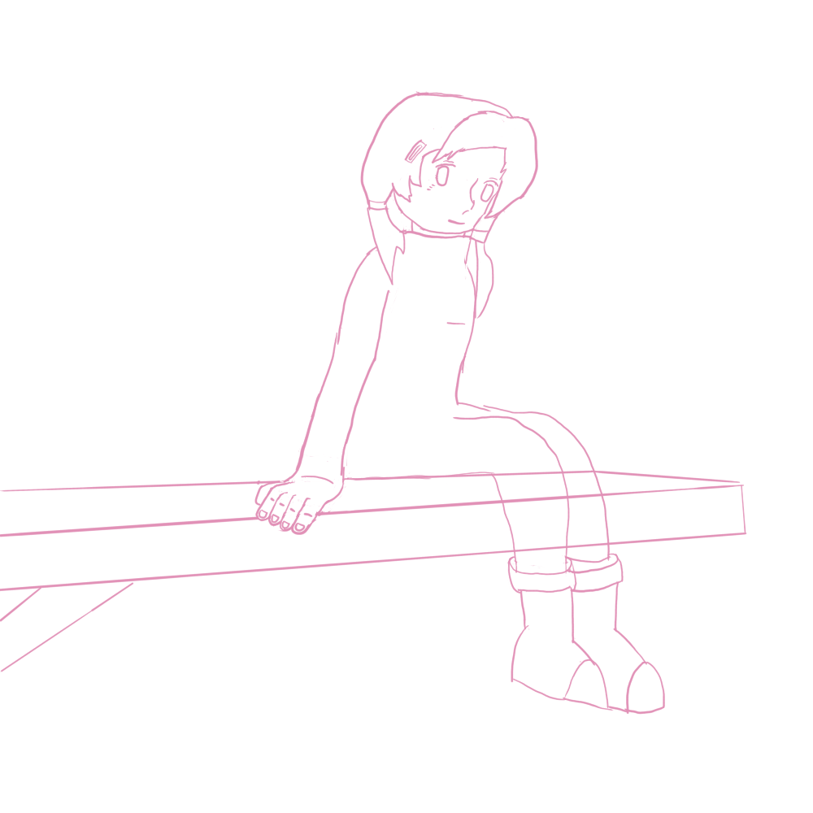

I'm back.
It's been a while, but I didn't forget about the blog; it's far from it! I didn't want to make a new post since I was waiting for Quilt to finish an art trade. But he was too busy, so instead of waiting, I figured I'd release some work I'd done.
First, I went to Battle at the Border Dos earlier this month and made a vlog showcasing my experience! Check it out here Battle at the Border Dos Vlog
Secondly, I have done a few art projects since my last post, including my end of the art trade.
Lastly, I finally added an RSS feed built into the blog, so feel free to add it.
My artwork
I made this in about 5 days since I wanted to challenge myself and create something before my vacation. So, I could add more details since I came back from vacation. But for now, I'm considering it done as I finished it within my goal.
But that doesn't mean I'm done posting! I've made a lot of art since my last post. For the private server Eden, they started to make a tribune for in-server stuff Eden Tribune. Though my art wasn't included, sadly, I still wanted to post it.
Pretty cool! I tried to get some cooler colors to match the sunset. What was harder was coloring the mountains/grass instead of just the background, mixing the colors with the whole image. I quite liked how it turned out.
I didn't quite like how the other image I made for the tribune turned out, but since it was never included, I guess I'm fine with that. If I kept working on it, then I'd probably work on the perspective more.
My sketches
Those are the 3 main images that I worked on, but I'd done a handful of sketches during that time. I've been trying to get into a habit of making more sketches - even if I don't finish them. This is because I can finish them later when I have a more specific idea or if I have an idea but don't feel like working on it further.

What could they be holding? I dunno.

This is something I have a plan to finish; I just didn't have time to work on it.

This was meant to be a gift, but I decided to pivot into the fishing picture as I was having more fun with it instead. I'd probably finish it at some point or rework it for something later.
I honestly forgot about this, but I was near finishing the sketching part; I mostly had to work on fixing up portions... I think this was like 4 months ago, lol.

I made this for the vlog, I cropped it later, but didn't save that one to the Linux OS, but here's how it was done. I actually made it with Wick Editor, which was the art program I used originally before I got my tablet.
Extra vlog tidbits.
If you aren't interested in the vlog, then you can stop reading here, but like with the Lupin post Lupin III Finished, I added a few tidbits that I couldn't really post about elsewhere.
Like 2 weeks before I went, my original plan/place I was staying ended up fizzing out, which made me pissed/scramble. The second option I had just didn't work out either, so I was worried if I would even get somewhere.
Thankfully Closen was able to host me most days, so I was very thankful that he was able to come in clutch. If you compare the last one to this one, you'll notice that I haven't been able to hang out with my local friends for as long. I don't want to talk too much about it since it's personal and out of the scope of the vlog. But because of what was happening over there, I wasn't really allowed to stay over any.
Closen told me that he was relatively recently diagnosed with Hypoglycemia, which is effectively the reverse of diabetes. This blood sugar level would drop too low, which made him feel dizzy/unwell. We talked about a few plans, but due to this, along with picking up people from the airport, we weren't always able to do them.
For example, they had a new lion exhibit that was added to the local zoo that was talked about, but we never ended up going. Sadly, we also planned to go to the missions but never ended up doing that, either. Once, another place I wanted to go to was a Round 1 arcade, but it was nearly an hour-long drive, so I couldn't really go.
It might seem weird for me to go to Arizona to go to a tourney, despite not even really wanting to play. I don't think I mentioned it in great detail, but I sold my controller a while ago. I was having some money problems, and because I felt pretty negatively about playing competitive Smash/not using the controller for anything but for Smash - I decided to just sell it for a pretty penny. It was a fully metal module, bowl, stick, and gears - so while I was a bit sad to sell it, as I had it for like 6 years, it was just better to give it to a new home.
I really was just planning on vibing out and doing comms since I was more interested in doing that than playing. The only reason I even joined was because like 10 people dropped out a few days before the event, and I wanted to help out. The pools were so uneven that Closen was even thinking about two 4-man pools and two 7-man pools to try and even things out.
I didn't have any fun playing the games, so I ended up just walking around after not doing well in pools. I wanted to walk around to sorta clear out my head and not be a grouch around other people and ruin their time.
In the video, I talked about having $10 in cash. When I was at the end game bar, they had a Beatmania complete Mix 2, which I was pretty excited about playing, so I took out $20 from the atm, converted $10 of it into coins, and then kept about $10 for myself. But when I went to play it, it was turned off. I asked the front desk girl about it; she said she'd turn it on. but then it turns out that it was out of service. I was pissed, lol. After going to the Electric Bat arcade, I used the first $10 but then had to go to a gas station to exchange the $10 in quarters into dollars so as not to walk around with a plastic cup full of change.
I really like my time at Electric Bat. Barely anybody was even at the rhythm game section, which meant I didn't have to pass up turns with other players, but the area around it is pretty sketchy. A few times, I went outside for a break, but then I'd see some cars parked far away at a closed-down place, and I walked right back into the bar, lol.
I was sad that I had completely forgotten about the cat bar, and I wish I had gone. When I found out, I was just leaving the mall, going to the electric bat arcade, trying to go asap, because it was around 3 PM, and Uber/Waymo, we were gonna start to get pricer.
When I came back from walking around outside after losing in pools, I was talking to Spo, asking him if he was hungry. He said he had already eaten, but I asked him where he had gone. He ate at the venue, which surprised me because I thought the food last time was honestly pretty mid af, which is like most bar food. But he was so drunk that "The food just goes down."
I thought about going to the upstairs venue to see the club, and I was actually considering going, but I didn't feel like spending $10 to mostly walk around for a few minutes and then leave. However, part of me wishes I had gone because it would have been an experience, even if I hadn't strictly enjoyed it.
The Waymo was super cool; it was a somewhat slow but very comfy car ride, safer than some Uber drivers I've had in the past. Despite it being a little scary the first few minutes, I ended up just forgetting I was in a self-driving car and just vibed out.
That's all from me today. expect a part 2 to art tutorials, as I enjoyed making the first one a lot.